Special issue · The software catalog
November 1986 · Vol. 1, No. 3
The Sixteen‑Bit Gazette
45 programs
Mac · iOS · IIgs
Walter Tengler
Apps that get
Apps that get
things done
45 apps for macOS, iOS and the Apple IIgs — utilities, real-time data, retro computing, creative tools, and more.
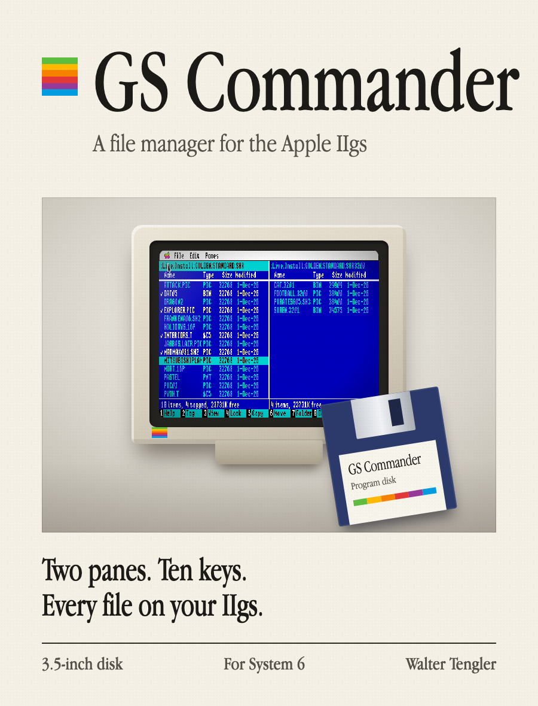
Cover storyGS CommanderTwo panes, ten keys, and every file on your Apple IIgs. Page 12 →Mac Utilities & Creative
19 apps Page 4
No. 1
Screen2Store
Design beautiful App Store & Play Store screenshots in minutes — every size, every language
View app →
No. 2
Retro TV
A century of television, on your Mac — play any video through six TVs from 1928 to 2024
View app →
No. 3
Retro Tube
Watch any video through 1980s computer graphics — Apple II, C64, Game Boy, NES, MSX and more
View app →
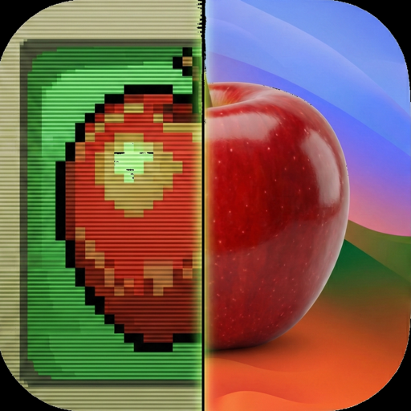
No. 4 Retro Graphics Converter Convert & view vintage computer graphics from Apple II, C64, Amiga, Atari, and more View app →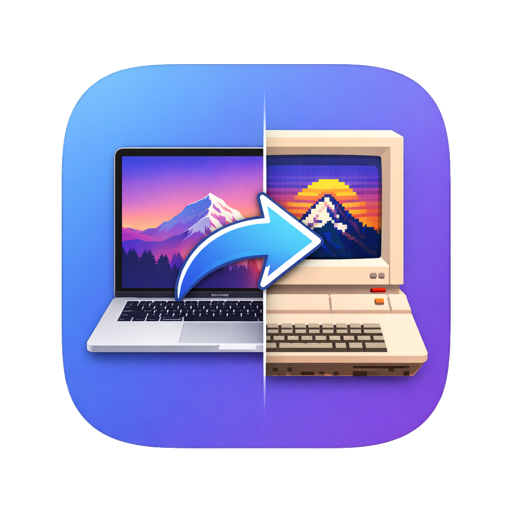
No. 5 BitPast Transform modern images into authentic retro graphics for 18 classic computer systems View app →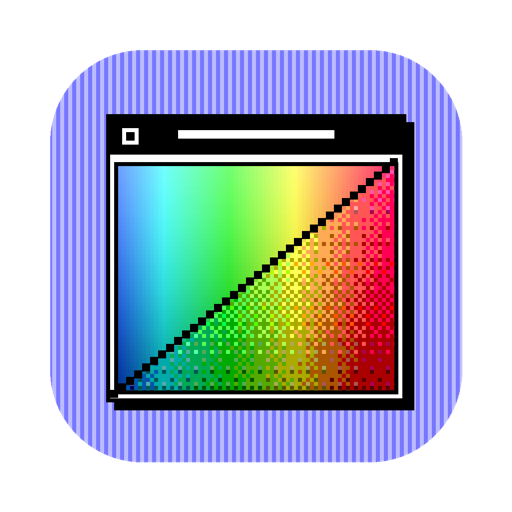
No. 6 GS Remap Convert pictures to and from Apple IIgs Super Hi-Res, with the look of the IIgs desktop View app →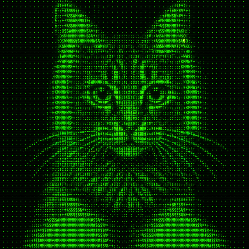
No. 7 1977 Convert any image into Apple II ASCII art with live phosphor-screen preview — open source View app → No. 8 RetroBrowse A modern dual-pane file manager for Apple II disk images — ProDOS, DOS 3.3, ShrinkIt and more View app → No. 9 CyanHero Digital negatives for cyanotype and alternative process UV art printing View app → No. 10 Aichive Reclaim the disk space your AI tools forgot to clean up View app → No. 11 FCPX Clean Reclaim the space Final Cut Pro forgot — safely and selectively View app → No. 12 EasyDup Find and remove duplicate files from your Mac with ease View app → No. 13 ExifEasy View and edit photo metadata and EXIF data directly on macOS View app → No. 14 File Vortex Smart file organizer that automatically sorts your Mac's chaos View app →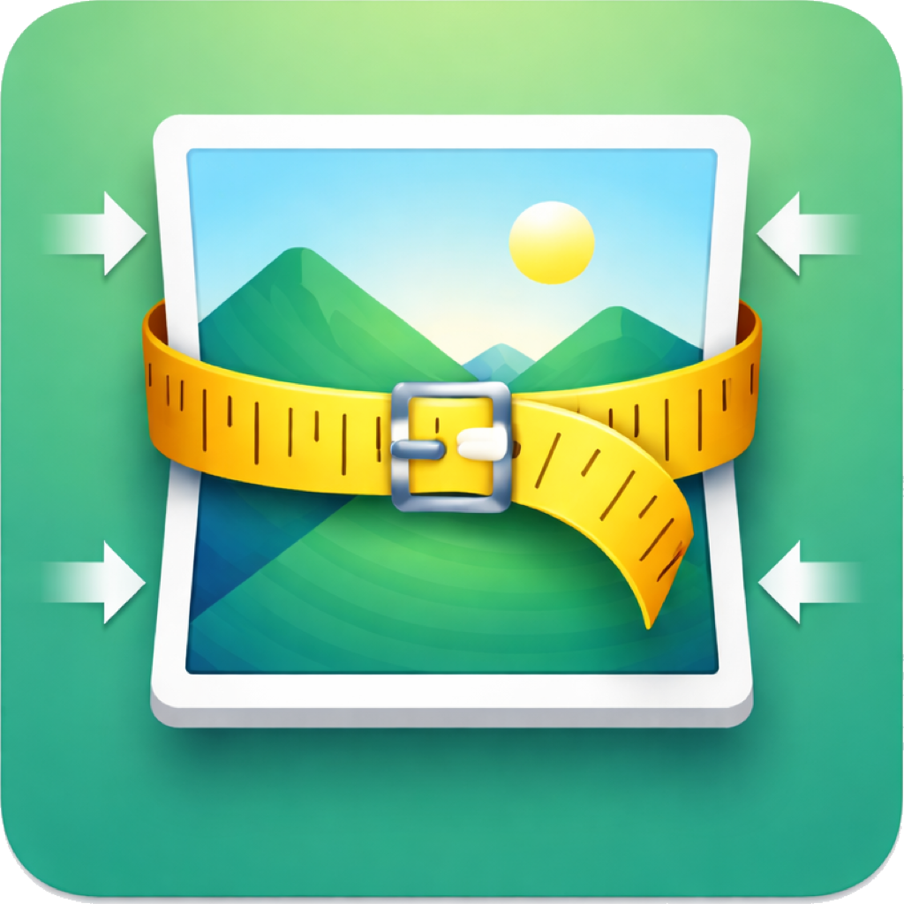
No. 15 SlimPix Smart image compression for Mac — smaller files, same quality View app → No. 16 Cores do Amor Extract beautiful color palettes from any image on macOS View app →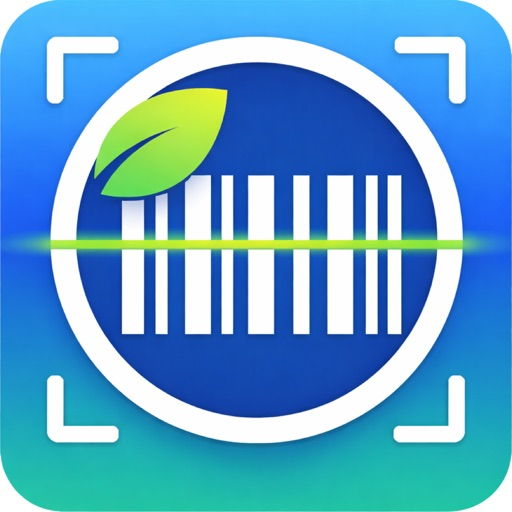
No. 17 Scanora Smart food scanner — scan barcodes and know what you eat View app → No. 18 AdSense Monitor Track your ad revenue from mobile apps in real time View app → No. 19 Wally’s Manager Every app you ship in one retro desktop — versions, review status and Apple IIgs disks, in thirteen classic skins View app →Apple IIgs
9 apps Page 12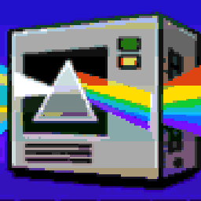
No. 20 MegaconvertGS An image converter that runs on the Apple IIgs itself — over 60 retro and modern formats to Super Hi-Res View app → No. 21 Conquer GS Real-time strategy for the Apple IIgs — build a base, harvest ore, conquer the enemy View app → No. 22 GS Commander A Norton Commander style file manager for the Apple IIgs — two panes, archives and disk images, previews of pictures, sounds and documents View app →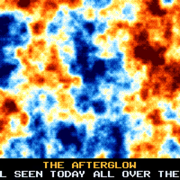
No. 45 IIgs Demos Demos for the Apple IIgs — animations and demo-scene effects in Super Hi-Res, with disk images to download View app →More retro computing, for the Mac and the Apple IIgs: 1977 →
Portugal
9 apps Page 15
No. 28
Alerta
Civil protection incidents across Portugal, updated in real time
View app →
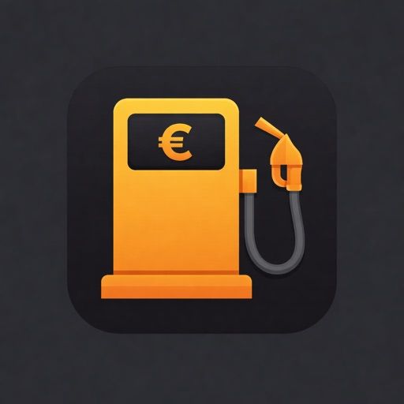
No. 29 Bomba Real-time fuel prices at every petrol station in Portugal View app → No. 30 Comboio Treck Live train tracking for Portugal's entire rail network View app → No. 31 Clima Viva Real-time climate data across Portugal, beautifully visualized View app → No. 32 Fluvio Real-time flood monitoring and river level tracking in Portugal View app → No. 33 Fugiu! The essential fishing guide for Portuguese fishermen View app →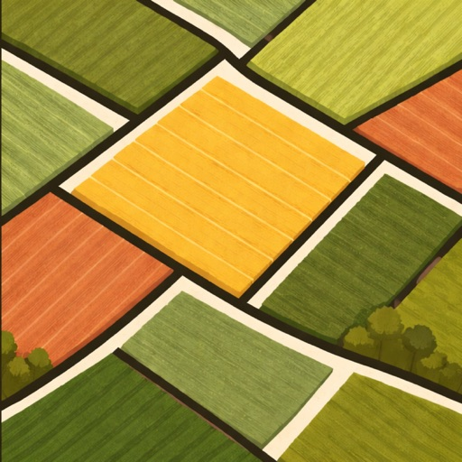
No. 34 PIBUP Building boundaries and property limits on an interactive map View app →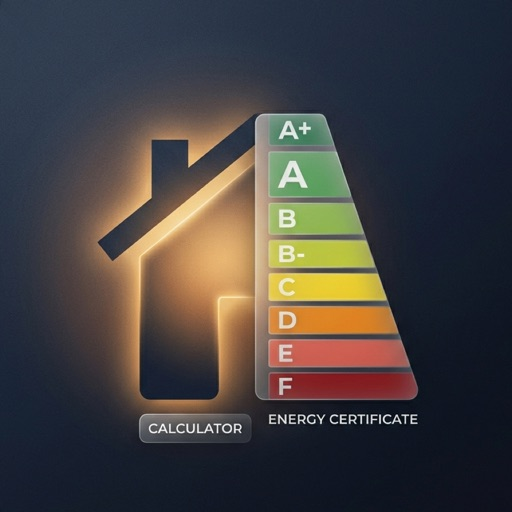
No. 35 Certificado Energético Calculate your home's energy efficiency class in Portugal View app → No. 36 SOS Ibérica Emergency services and public contacts for Portugal and Spain View app →Europe & Global
5 apps Page 20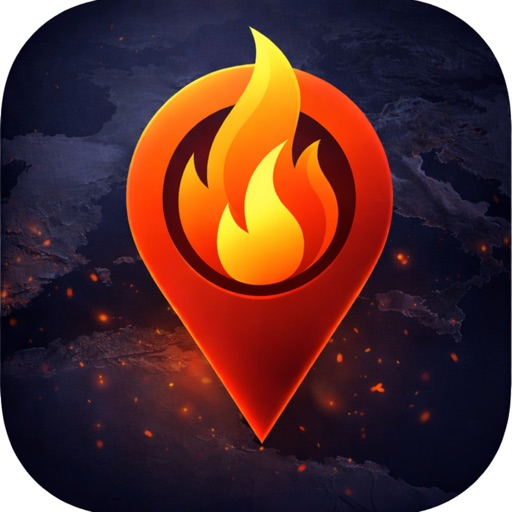
No. 37 Fire — EU Fires Real-time wildfire tracking across Europe, powered by NASA FIRMS satellite data View app → No. 38 EU Energy Monitor Real-time European energy market data and power generation at a glance View app → No. 39 Terramoto Earthquake & tsunami physics simulation and live seismic tracking View app → No. 40 Abastece Real-time fuel prices at every station in Chile, Brazil and Argentina View app →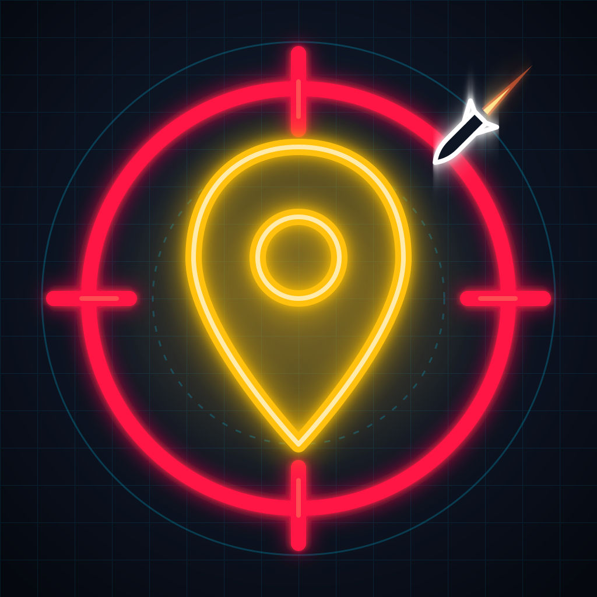
No. 41 Missile Tag Launch virtual missiles at your friends' real locations — run or shield up before it lands View app →Utilities & Planning
2 apps Page 23Games
1 app Page 25This catalog is dressed as 1986, the year of the Apple IIgs. The programs in it are from today.